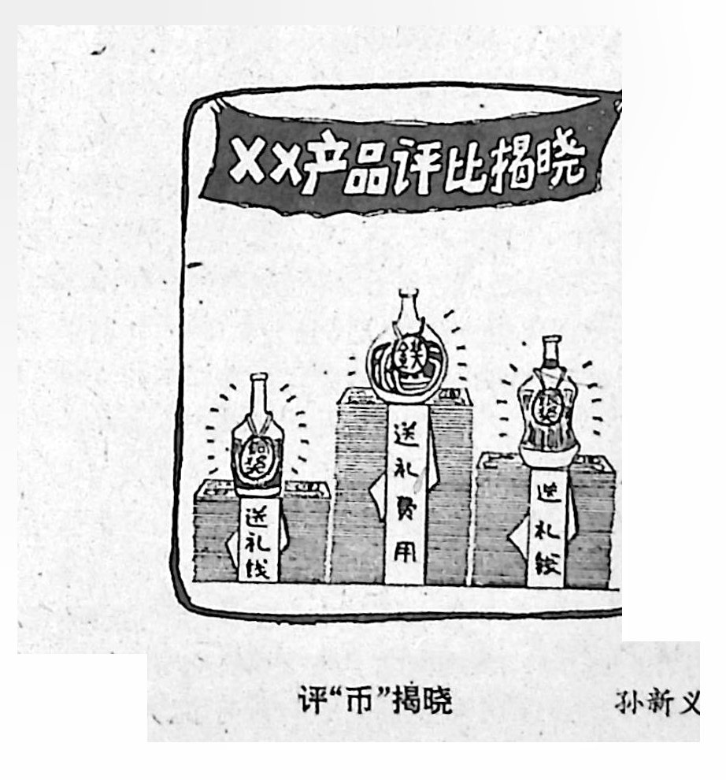

孙新义 《人事》1990年第6期（总第57期），第27页
评“币”揭晓
Results of the “Money” Competition
- Text in the drawing
- ××产品评比揭晓 / 送礼钱 / 送礼费用 / 送礼钱 / 金奖（？）/ 银（？）/ 铜（？）
Results of the XX product competition / Gift money / Gift expenses / Gift money / medals (partly legible) - Description
- Under a banner announcing the results of a product competition, three medal-wearing liquor bottles stand on a winners' podium built from stacks of banknotes labeled “gift money” and “gift expenses.”
- Note
- 评比, comparative ratings and prize competitions among products and units, were notoriously won with gifts. The title puns 评比 (competition) on 评币 (rating by money).
- Artist
- Sun Xinyi 孙新义
- Published in
- 《人事》1990年第6期（总第57期）, p. 27
- Themes
- Gifts and banquets · Formalism

Cite
Sun Xinyi, “评“币”揭晓” [Results of the “Money” Competition], Renshi (Personnel) 《人事》, 1990, no. 6, p. 27.